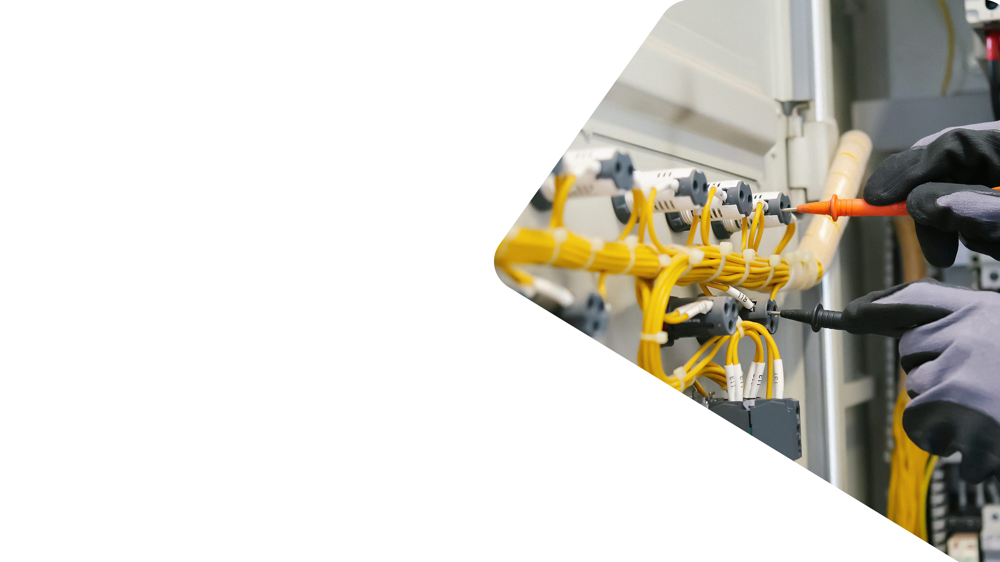
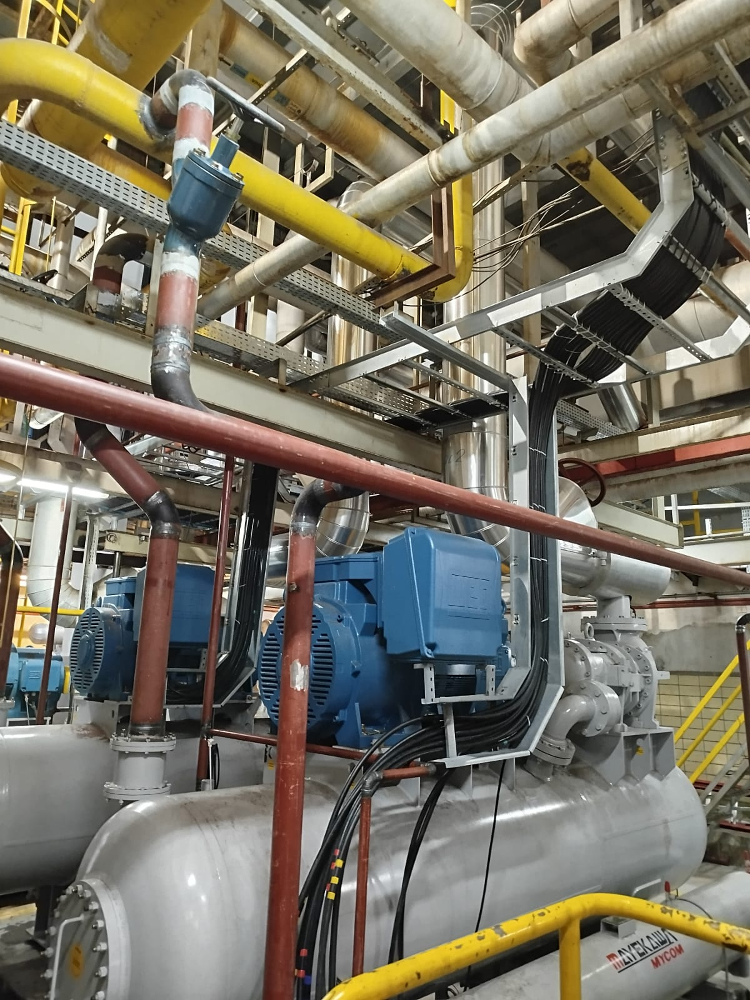
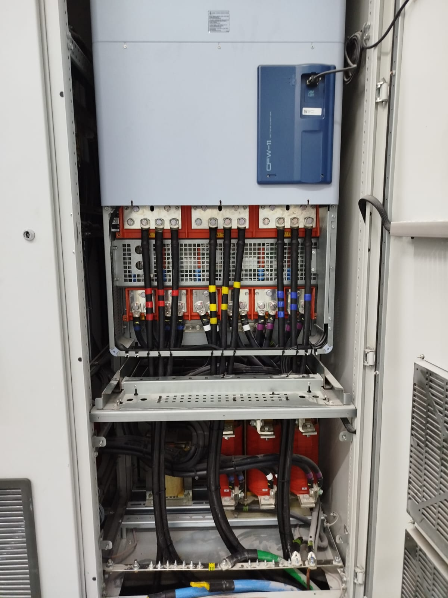
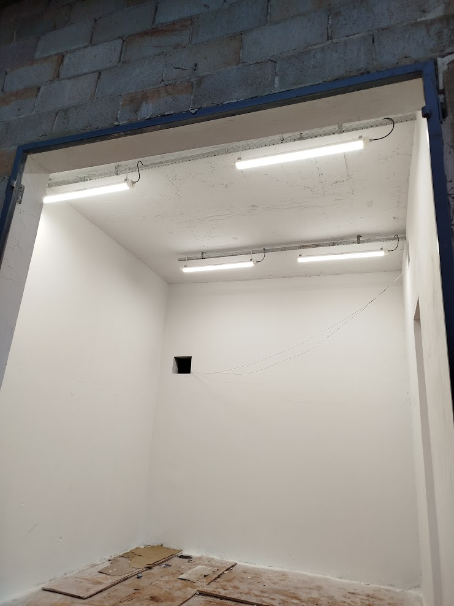
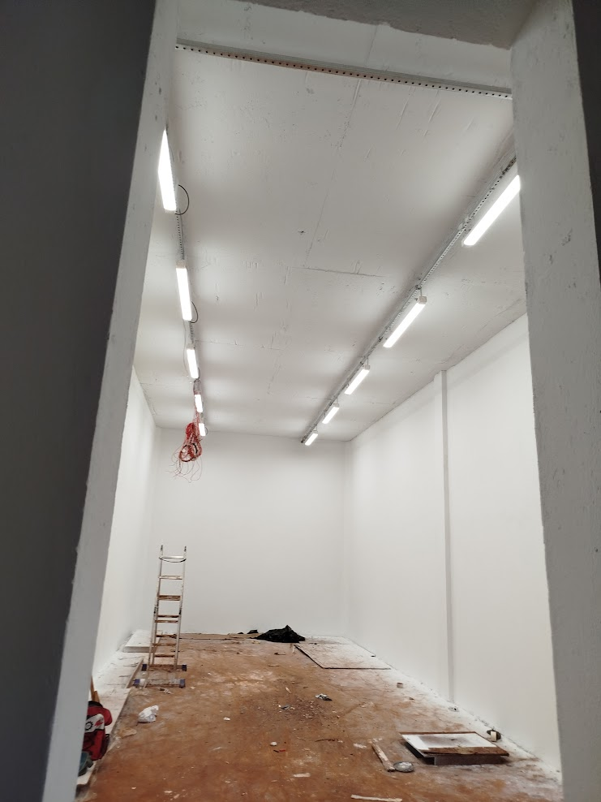
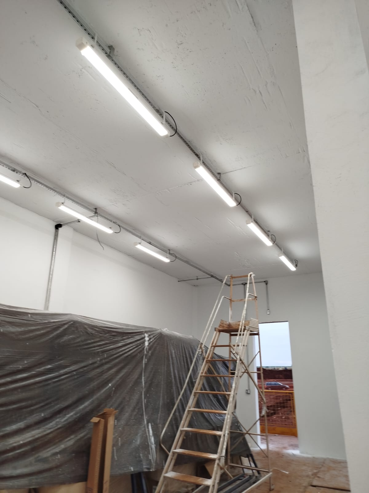
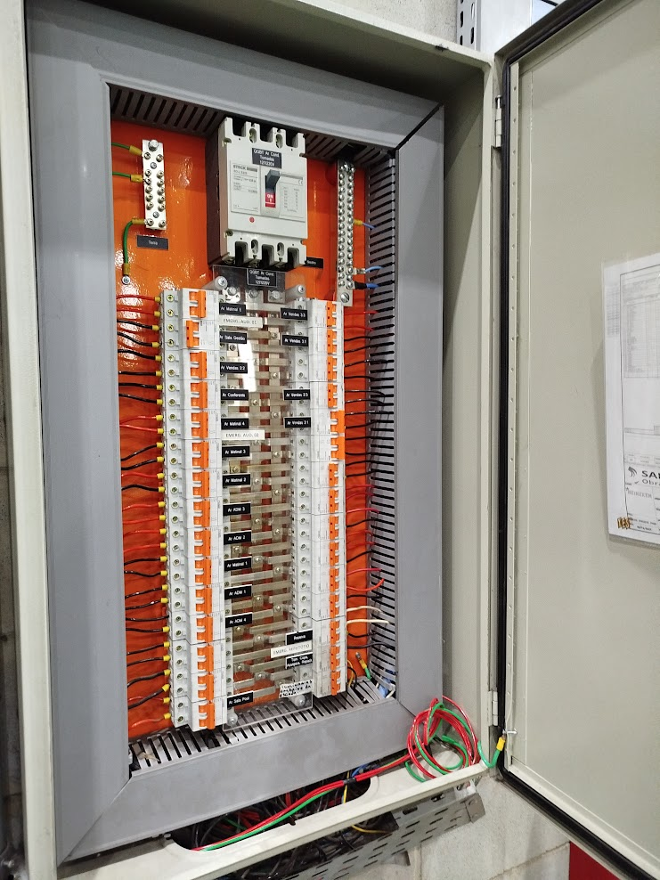
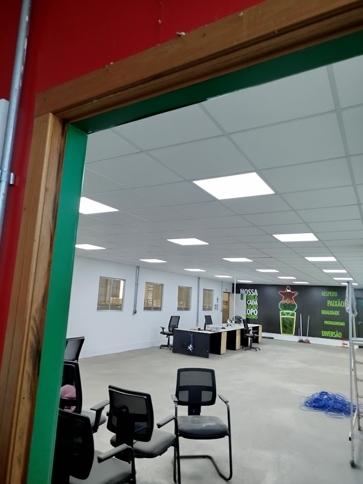

A JR Montagens de Elétrica foi responsável pela montagem do sistema de compressão de amônia na unidade da Lactalis no Paraná, com o objetivo de otimizar o processo de refrigeração industrial para a conservação de produtos lácteos. O projeto envolveu a instalação da compressora de amônia, infraestrutura elétrica necessária para o funcionamento do sistema e o comissionamento de todos os equipamentos.
A equipe da JR Montagens executou a instalação e a integração dos sistemas com grande precisão, atendendo aos rigorosos padrões de segurança e eficiência. A amônia, sendo um gás refrigerante altamente volátil, exigiu cuidados especiais para garantir a operação segura e eficaz de todo o sistema de refrigeração.
Com um alto nível de especialização e experiência, a JR Montagens entregou uma solução confiável e robusta, minimizando impactos nas operações da Lactalis e garantindo o bom desempenho do sistema de refrigeração, essencial para a manutenção da qualidade dos produtos da empresa.





A JR Montagens teve o privilégio de realizar um trabalho de grande importância para a empresa Biometano Santa Cruz, executando a instalação do porão de cabos, uma etapa fundamental para a infraestrutura elétrica e de comunicação. Esse serviço foi essencial para garantir que a distribuição de cabos fosse feita de forma eficiente e segura, atendendo aos padrões técnicos exigidos pelo projeto e otimizando a operação da planta.
Além disso, a equipe da JR Montagens também se encarregou da execução da sala de bateria, um ambiente crucial para o fornecimento de energia e a manutenção da estabilidade operacional da planta. Com a instalação cuidadosa e o dimensionamento adequado dos equipamentos, a sala de bateria foi montada com todo o rigor necessário, garantindo o desempenho adequado durante os processos críticos da Biometano Santa Cruz.
Por fim, a JR Montagens também foi responsável pela construção da sala de painel e da sala de automação, espaços que exigem precisão e atenção aos detalhes. A instalação dos painéis de controle e sistemas automatizados foi realizada com eficiência, permitindo à Biometano Santa Cruz um monitoramento completo e eficaz de suas operações. Esse trabalho integrado demonstra o compromisso da JR Montagens com a qualidade e segurança, contribuindo para o sucesso do projeto da Biometano Santa Cruz.




A JR Montagens foi a responsável pela execução de importantes serviços de infraestrutura para a empresa Delo Engenharia, localizada em Contagem, Minas Gerais. Entre as principais atividades realizadas, destaca-se a adequação da sala, onde a equipe da JR Montagens trabalhou para reorganizar o espaço, garantindo maior funcionalidade e segurança para as operações da Delo Engenharia. A adequação incluiu ajustes no layout e na distribuição de recursos, proporcionando um ambiente mais eficiente.
Além disso, a JR Montagens também se encarregou da instalação da iluminação no barracão, projetando um sistema eficiente que atendesse às necessidades do ambiente de trabalho. A iluminação foi cuidadosamente planejada para proporcionar uma visibilidade ideal, ao mesmo tempo em que buscou otimizar o consumo de energia, criando um ambiente mais seguro e confortável para os colaboradores da Delo Engenharia.
A montagem do painel para o ar-condicionado foi outro serviço essencial executado pela JR Montagens. Com o objetivo de melhorar o controle e a eficiência do sistema de climatização, a montagem do painel foi realizada com precisão e qualidade, garantindo o funcionamento adequado do sistema de ar-condicionado. Isso resultou em um ambiente mais confortável e com maior economia de energia, atendendo às necessidades específicas da Delo Engenharia de forma eficaz.



A JR Montagens realizou com excelência o serviço de montagem de tubulação em inox, garantindo alta qualidade e precisão em cada etapa do projeto. A equipe especializada trabalhou com dedicação para assegurar que a instalação atendesse aos mais rigorosos padrões técnicos, proporcionando um sistema seguro, durável e eficiente. O uso do inox foi fundamental para garantir resistência à corrosão e maior vida útil da tubulação.
Cada detalhe do serviço foi executado com cuidado, desde o planejamento até a instalação final, assegurando que a tubulação estivesse perfeitamente ajustada às necessidades do ambiente. A JR Montagens aplicou técnicas avançadas de montagem, garantindo a vedação correta e um fluxo contínuo dentro do sistema. Esse trabalho reflete o compromisso da empresa com a excelência e a satisfação dos clientes.
Com essa montagem de tubulação em inox, a JR Montagens reafirma sua experiência e competência na realização de projetos industriais e estruturais. A empresa segue comprometida em oferecer soluções eficientes, sempre priorizando a segurança, a qualidade dos materiais e a precisão na execução dos serviços.
A JR Montagens realizou um projeto abrangente de instalação elétrica e iluminação, combinando serviços de infraestrutura de força e acabamento predial. O foco inicial do trabalho envolveu a Montagem de Painéis de Distribuição Elétrica e Quadros de Tomadas Industriais. Foram instalados quadros robustos com tomadas industriais (padrão IEC 60309) de 220 V, sendo que um dos painéis foi configurado para receber uma alimentação de 380 V e realizar a correta distribuição para as saídas em 220 V, garantindo segurança e versatilidade na alimentação de equipamentos.
O segundo pilar do projeto concentrou-se na Instalação de Iluminação Moderna e Decorativa em teto de gesso, com foco no design e na funcionalidade do ambiente. Este serviço incluiu a montagem de luminárias embutidas no teto, como um elegante plafon central quadrado, complementado por um sistema de iluminação perimetral. Utilizou-se fita LED instalada em uma sanca linear, criando um efeito de luz indireta e decorativa que valoriza a arquitetura do espaço.
Em síntese, o escopo do projeto demonstrou a competência da JR Montagens em executar tanto a eletricidade de força (montagem e proteção de circuitos em painéis elétricos) quanto a eletricidade de acabamento (instalação de sistemas de iluminação de alto padrão). O trabalho entregue resulta em um sistema elétrico seguro, protegido e funcional, harmonizado com um projeto luminotécnico moderno e esteticamente agradável.
.jpg)
.jpg)
.jpg)
.jpg)
.jpg)
.jpg)
O projeto executado pela equipe de montagem focou em um trabalho de infraestrutura industrial de grande escala, conforme evidenciam as imagens da planta. Um dos principais focos foi a montagem de sistemas de tubulação e instrumentação, visível na central de processos onde tubos de diferentes diâmetros, válvulas, purgadores e equipamentos de controle (como válvulas com atuadores pneumáticos e medidores de pressão) foram instalados para o transporte de fluidos como "VAPOR DE BAIXA" (como indicado na tubulação), sendo um trabalho crítico que exige precisão em conexões e suportes.
Paralelamente à montagem mecânica, uma vasta infraestrutura de eletricidade e cabeamento industrial foi desenvolvida. O trabalho incluiu a instalação de longas e elevadas eletrocalhas perfuradas e robustas para a organização e o roteamento de uma grande quantidade de cabos elétricos e de instrumentação, como mostram as imagens aéreas e de passagem. Este sistema de leitos de cabos visa garantir a segurança, a proteção e a manutenção facilitada dos circuitos de energia e controle essenciais para a operação da planta, terminando em painéis e caixas de junção em aço inoxidável.
Por fim, o projeto cuidou da segurança e da disponibilidade elétrica no chão de fábrica através da instalação de Quadros de Tomadas Industriais e Proteção Elétrica. Estes quadros, equipados com disjuntores e múltiplas tomadas industriais de 220 Vac (Padrão IEC 60309), garantem pontos de conexão seguros e adequadamente protegidos para ferramentas e equipamentos móveis. Em resumo, o escopo reflete uma execução completa de Piping, instalação de Cable Trays (Eletrocalhas) e montagem de painéis de distribuição.
.jpg)
.jpg)
.jpg)
.jpg)
.jpg)
.jpg)